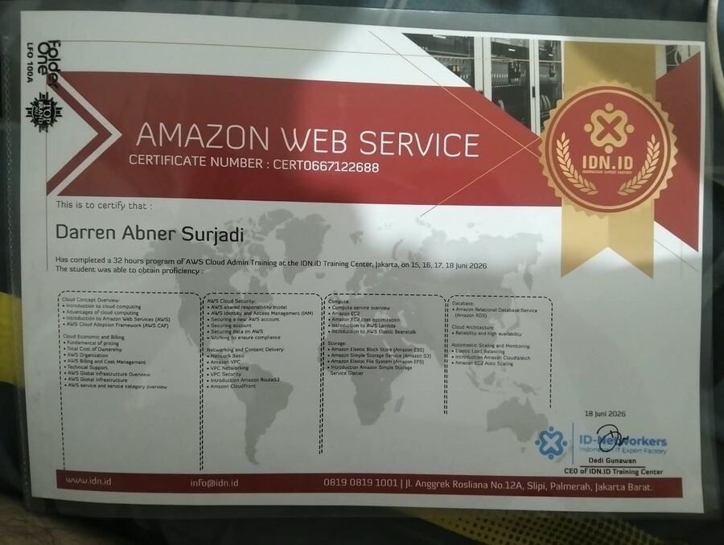
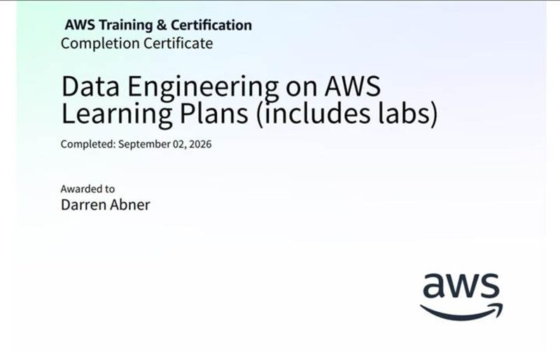
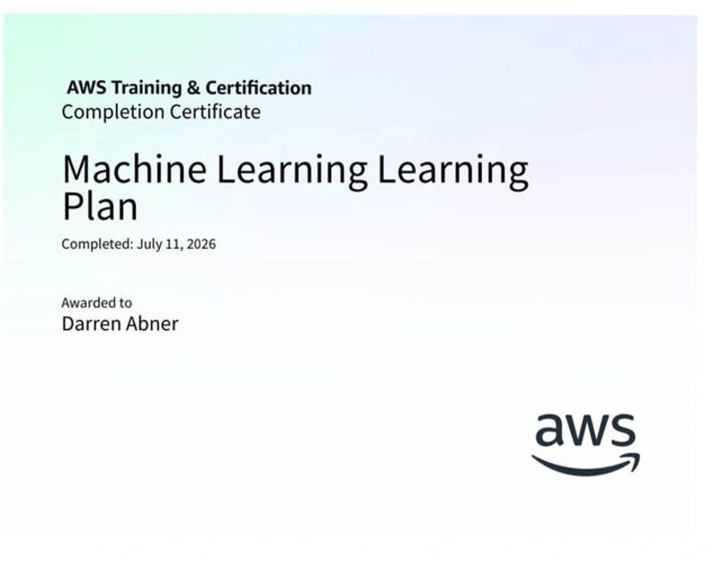
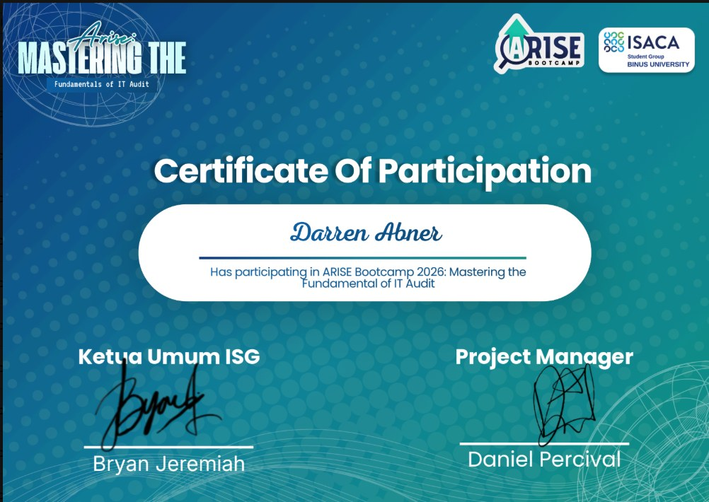
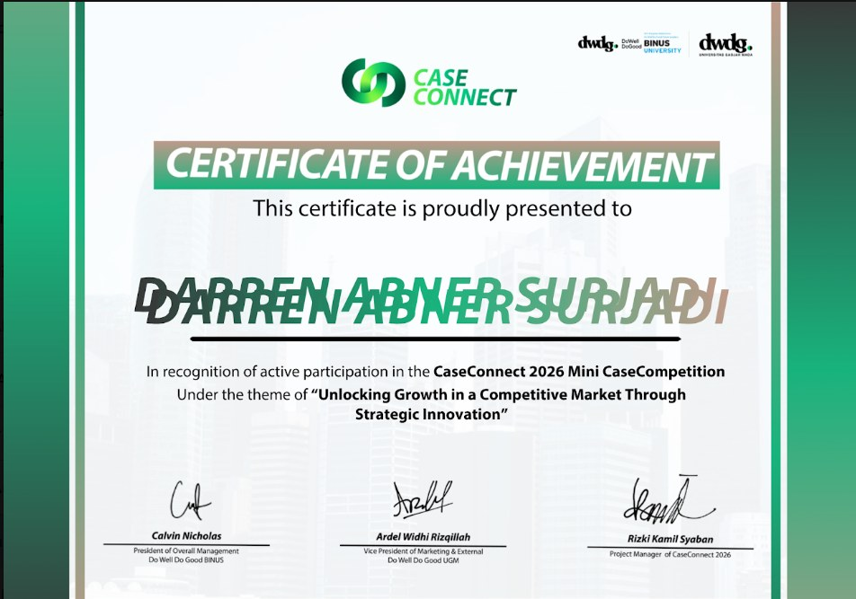

Sertifikasi & Pelatihan
Pembelajaran berkelanjutan di bidang cloud computing, sebagai fondasi untuk memahami keamanan dan tata kelola infrastruktur digital.

AWS Cloud Practitioner Essentials
Kursus dasar pengenalan konsep, keamanan, dan model tanggung jawab bersama pada layanan cloud AWS — diselesaikan 2 Juli 2026.

AWS Cloud Admin Training
Program pelatihan 32 jam mencakup cloud concepts, AWS IAM & security, compute, storage, database, hingga monitoring — Juni 2026.

Data Engineering on AWS
Learning plan lengkap dengan sesi praktik (labs), diselesaikan pada 2 September 2026.

Machine Learning Foundations
Modul dasar pemahaman konsep dan penerapan machine learning pada ekosistem AWS.

Mastering the Fundamentals of IT Audit
Bootcamp intensif tentang dasar-dasar audit teknologi informasi, diselenggarakan oleh ISACA Student Group BINUS University.

CaseConnect 2026 — Certificate of Achievement
Partisipasi aktif pada CaseConnect 2026 Mini Case Competition dengan tema "Unlocking Growth in a Competitive Market Through Strategic Innovation".
Kompetisi yang Pernah Diikuti
Case Connect — Mini Case Competition
Menyusun strategi go-to-market untuk sebuah studi kasus bisnis, dengan fokus pada problem solving dan kerja tim. Turut melakukan riset kesesuaian aspek compliance dan risk management terhadap strategi bisnis yang diajukan agar selaras dengan tujuan dan proses bisnis perusahaan.
Competitive Programming (Senior Level)
Mempersiapkan diri untuk kompetisi competitive programming level lanjut menggunakan C++, dengan fokus pada penguasaan algoritma dynamic programming dan greedy.